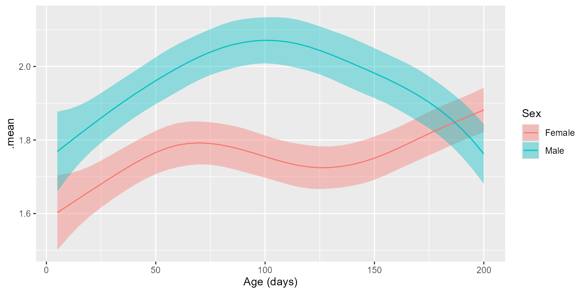

Test for x/y numeric relationships using regression models.
Source:R/stats_emmeans.r
stats_emmeans.RdCalculates estimated marginal means (aka least-squares means) using the
emmeans package. The stats_emmeans() function will
estimate means at any location along the x-axis, and can test for
differences between categories. The stats_emtrends() function examines
the slope of the trendlines, also with support for testing differences
between categories.
Usage
stats_emmeans(
df,
regr,
resp = attr(df, "response"),
contrast.by = NULL,
split.by = NULL,
model = "lm",
at = NULL,
level = 0.95,
alt = "!=",
mu = 0,
p.adj = "fdr"
)
stats_emtrends(
df,
regr,
resp = attr(df, "response"),
contrast.by = NULL,
split.by = NULL,
model = "lm",
at = NULL,
level = 0.95,
alt = "!=",
mu = 0,
p.adj = "fdr"
)Arguments
- df
A data.frame with any columns named by
regr,resp,contrast.by, andsplit.by.Required.- regr
The predictive (independent; x-axis) variable in
df. Must be numeric. Required.- resp
The response (dependent; y-axis) variable in
df, such as taxa abundance or alpha diversity. Must be numeric. Default:attr(df, 'response')- contrast.by
The variable in
dfdefining the statistical groups. Must be categorical. Default:NULL- split.by
The variable(s) in
dffor splitting the data by prior to any calculations. Must all be categorical. Default:NULL- model
How to fit the trendline. Options are
'lm','log', and'gam'. Default:'lm'- at
Calculate means or slopes at this
regrvalue. Default:NULL, which setsatto the median ofregr's values.- level
The confidence level for calculating a confidence interval. Default:
0.95- alt
Alternative hypothesis direction. Options are
'!='(two-sided; not equal tomu),'<'(less thanmu), or'>'(greater thanmu). Default:'!='- mu
Reference value to test against. Default:
0- p.adj
Method to use for multiple comparisons adjustment of p-values. Run
p.adjust.methodsfor a list of available options. Default:"fdr"
Value
A tibble data.frame with the following fields:
| Field | Description |
| .mean | Estimated marginal mean. See emmeans::emmeans(). |
| .mean.diff | Difference in means. |
| .slope | Trendline slope. See emmeans::emtrends(). |
| .slope.diff | Difference in slopes. |
| .h1 | Alternate hypothesis. |
| .n | Number of samples. |
| .se | Standard error. |
| .df | Degrees of freedom. |
| .lower | Confidence interval lower bound. |
| .upper | Confidence interval upper bound. |
| .t.ratio | .mean / .se |
| .effect.size | Effect size. See emmeans::eff_size(). |
| .p.val | Probability that null hypothesis is correct. |
| .adj.p | .p.val after adjusting for multiple comparisons. |
Details
For further reading on this topic, see https://stats.oarc.ucla.edu/r/seminars/interactions-r/ .
See also
Other stats_tables:
adiv_stats(),
bdiv_stats(),
distmat_stats(),
stats_table(),
taxa_stats()
Examples
library(rbiom)
library(ggplot2)
df <- adiv_table(babies)
# Does Shannon diversity increase with Age? ------------------------
stats_emtrends(df, regr = "Age") %>% select(!.n:.df)
#> # Model: lm(.diversity ~ `Age (days)`)
#> # A tibble: 1 × 8
#> `Age (days)` .slope .h1 .lower .upper .t.ratio .p.val .adj.p
#> <dbl> <dbl> <fct> <dbl> <dbl> <dbl> <dbl> <dbl>
#> 1 112 0.000462 != 0 0.000130 0.000794 2.73 0.00635 0.00635
# Does Sex make a difference? ------------------------
stats_emtrends(df, "Age", split.by = "Sex") %>% select(!.n:.upper)
#> # Model: lm(.diversity ~ `Age (days)`)
#> # A tibble: 2 × 7
#> `Age (days)` Sex .slope .h1 .t.ratio .p.val .adj.p
#> <dbl> <fct> <dbl> <fct> <dbl> <dbl> <dbl>
#> 1 112 Female 0.00122 != 0 5.73 0.0000000120 0.0000000240
#> 2 112 Male -0.000721 != 0 -2.61 0.00932 0.00932
stats_emtrends(df, "Age", contrast.by = "Sex") %>% select(!.n:.t.ratio)
#> # Model: lm(.diversity ~ `Age (days)` * Sex)
#> # A tibble: 1 × 7
#> `Age (days)` Sex .slope.diff .h1 .effect.size .p.val .adj.p
#> <dbl> <chr> <dbl> <fct> <dbl> <dbl> <dbl>
#> 1 112 Female - Male 0.00194 != 0 0.00324 0.0000000755 7.55e-8
# Try a generalized additive model at a three time points. --------------------
stats_emmeans( df, "Age", model = "gam", at = c(30, 90, 150))
#> # Model: gam(.diversity ~ s(`Age (days)`, bs = "cs"), method = "REML")
#> # A tibble: 3 × 11
#> `Age (days)` .mean .h1 .n .se .df .lower .upper .t.ratio .p.val
#> <dbl> <dbl> <fct> <int> <dbl> <int> <dbl> <dbl> <dbl> <dbl>
#> 1 30 1.78 != 0 2684 0.0236 2678 1.73 1.82 75.2 0
#> 2 90 1.89 != 0 2684 0.0228 2678 1.85 1.94 83.0 0
#> 3 150 1.83 != 0 2684 0.0234 2678 1.79 1.88 78.2 0
#> # ℹ 1 more variable: .adj.p <dbl>
stats_emtrends(df, "Age", model = "gam", at = c(30, 90, 150))
#> # Model: gam(.diversity ~ s(`Age (days)`, bs = "cs"), method = "REML")
#> # A tibble: 3 × 11
#> `Age (days)` .slope .h1 .n .se .df .lower .upper .t.ratio
#> <dbl> <dbl> <fct> <int> <dbl> <int> <dbl> <dbl> <dbl>
#> 1 30 0.00401 != 0 2684 0.000979 2678 0.00209 0.00593 4.10
#> 2 90 -0.000800 != 0 2684 0.000751 2678 -0.00227 0.000674 -1.06
#> 3 150 0.000252 != 0 2684 0.000768 2678 -0.00125 0.00176 0.329
#> # ℹ 2 more variables: .p.val <dbl>, .adj.p <dbl>
# Use returned data frame to make a figure. ------------------------
stats_emmeans(df, "Age", model = "gam", at = c(1:40) * 5, split.by = "Sex") %>%
ggplot(aes(x = `Age (days)`)) +
geom_ribbon(aes(ymin = .lower, ymax = .upper, fill = Sex), alpha = 0.4) +
geom_line(aes(y = .mean, color = Sex))

# See the underlying stats calculations: ------------------------
stats_emtrends(df, regr = "Age")$code
#> data <- adiv_table(biom)
#>
#> data %<>% dplyr::rename(
#> .regr = "Age (days)",
#> .resp = ".diversity" )
#>
#> stats <- stats::lm(.resp ~ .regr, data) %>%
#> emmeans::emtrends(
#> specs = NULL,
#> var = '.regr',
#> at = list(.regr = 112),
#> infer = TRUE,
#> level = 0.95 ) %>%
#> summary(side = '!=', null = 0) %>%
#> with(tibble(
#> 'Age (days)' = .regr,
#> .slope = .regr.trend,
#> .h1 = factor('!= 0'),
#> .n = nrow(data),
#> .se = SE,
#> .df = as.integer(df),
#> .lower = lower.CL,
#> .upper = upper.CL,
#> .t.ratio = t.ratio,
#> .p.val = p.value )) %>%
#> suppressWarnings() %>%
#> tryCatch(error = function (e) data.frame()[1,]) %>%
#> as_tibble() %>%
#> mutate(.adj.p = p.adjust(.p.val, 'fdr'))